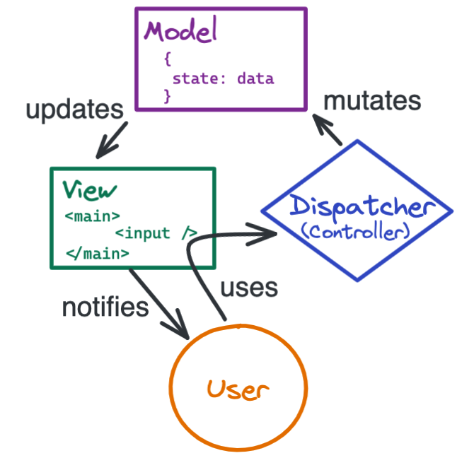
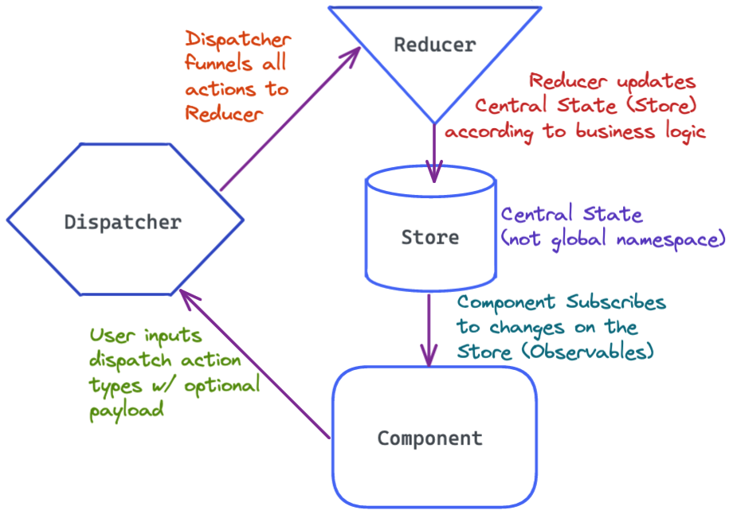
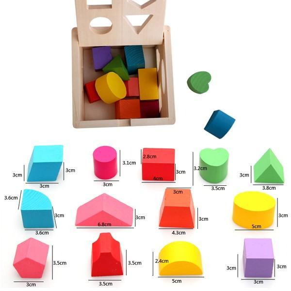
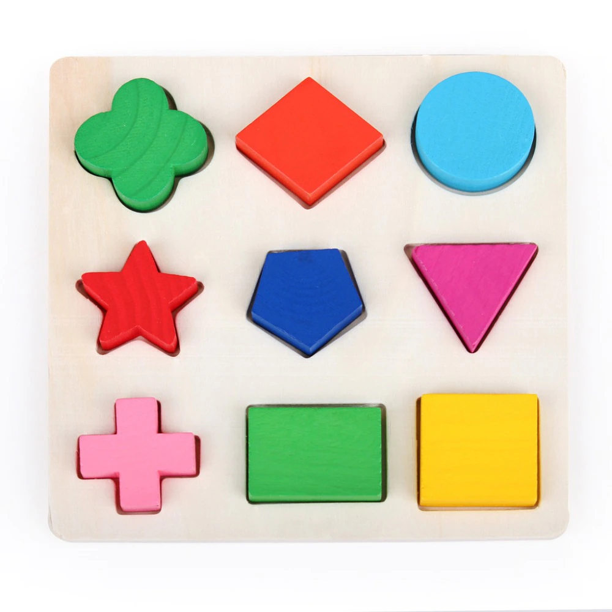
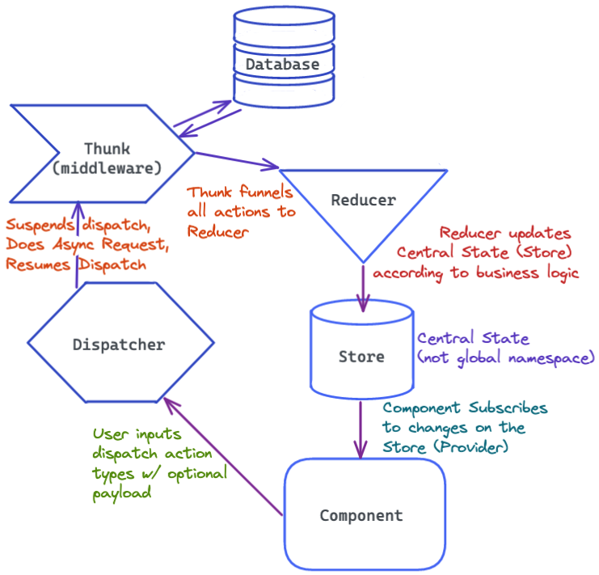

Redux
The Leading State Managment Library for React Apps
Why do we need Redux?
Web Apps are getting more complex: The motivation
As the requirements for JavaScript single-page applications have become increasingly complicated, our code must manage more state than ever before. This state can include server responses and cached data, as well as locally created data that has not yet been persisted to the server. UI state is also increasing in complexity, as we need to manage active routes, selected tabs, spinners, pagination controls, and so on.
Managing this ever-changing state is hard. If a model can update another model, then a view can update a model, which updates another model, and this, in turn, might cause another view to update. At some point, you no longer understand what happens in your app as you have lost control over the when, why, and how of its state. When a system is opaque and non-deterministic, it's hard to reproduce bugs or add new features.
Mutation & Asynchronicity
This complexity is difficult to handle as we're mixing two concepts that are very hard for the human mind to reason about: mutation and asynchronicity.
- What if we could make mutations seem like immutable copy-on-updates?
- What if we could make asynchronous operations seem like synchronous ones?
State Accessible from Anywhere
We could have the state stored in a global container, which would allow components to access state from any position in the component tree. But this can cause problems because any component can access any part of the state. transient stateful bugs, because there’s no rules for accessing or writing to the global state.
Is the Context API really state management?
Article on the differences
Context is more like hidden props than abstracted state. - Mark Erikson
Context is how state (that exists somewhere already) is shared with other components.
Context has little to do with state management. - David Khourshid
Context API is specific to the React API. Redux is more of a design pattern and since it is a separate library that can be used in any app.
Both Context & Redux allow us to avoid prop drilling, but the similarities pretty much end there.
Context vs. Redux
- Context
- Does not create a store. You have to give it one.
- Reads the Provider value
- Passes down a single value. Distinguishing bewteen different state requires separate Contexts.
- Limited support in React Dev Tools
- Difficult to skip updates of consuming component
- Doesn't handle side effects or async
- Redux
- Stores/manages singleton object
- Reads singleton object
- Mutates state with dispatch/action/reducer pattern
- Extensive custom Redux Dev Tools support
- Accomodates middleware for side effects & async ops
- Offers component subscriptions to subset of the store
- Only rerenders the component that is affected by the store update, not the whole component tree.
useContext + useReducer
- Using these in combination can start to approach a state management system
- But still rerenders the whole Provider sub-tree
- Still lacks natural way to handle async side effects
Summary
- Context:
- Passing down a value to nested components without prop-drilling
- useReducer
- Moderately complex React component state management using a reducer function
- Context & useReducer
- Moderately complex React component state management using a reducer function, and passing that state value down to nested components without prop-drilling
- Redux
- Sophisticated state management layer (independent of UI) using reducer functions
- Fantastic app date/error traceability over time
Flux Architecture & Redux
Store - View - Dispatcher/Reducer

Three Principles
Redux can be summarized as three fundamental principles:
- Single Source of Truth:
- State is read-only:
- read-only store
- UI emits actions
- Dispatched actions update Store via pure functions:
Redux Schematic
The Synchronous Update Cycle

Action -> Dispatch -> Reducer
Define the App's
Actions
Define the Reducer logic
to Handle the Actions

redux
⌙ actions.js
⌙ reducers.js
⌙ store.js

Add Any Actions Easily
Pass an "enum" (string) to trigger any arbitrary app logic. Mold the action & reducer logic in a flexible way.
Store & Actions & Reducers
const store = { count: 0 }
const action = {
type: 'increment', // type is required
data: 1 // optionally, pass any other data that's needed for the operation
}
const reducer = (state, action) => {
switch(action.type) {
case 'increment':
return { state: state.count + action.data }
case 'decrement':
return { state: state.count - action.data }
default:
return state
}
}
Redux Core-team Recommendations
Redux Style Guide
Redux Dev Tools
Download the extension here
React-Redux Library
Docs
React Redux is the official React UI bindings layer for Redux. It lets your React components read data from a Redux store, and dispatch actions to the store to update state.
Code Along
Let's try out Redux in a simple Counter App!
Let's use Redux in our Todo App!!
Todo Take Home Challenge!
Try adding these new features on your own:
- Click "!" icon to prioritize a todo
- Or make the "!" a select input to set multiple priority levels
- Tags to categorize todos (w/ color scheme)
- Filter by tags & priority
- Sort by alpha, priority etc
- Recycle bin to recover deleted todos
- Timestamps: date created & date completed
- Add an initial fetch call to populate inital todos
- use title attr to add descriptor tooltips for each feature
Everything's a List!
(Ok, maybe not eerything)
- Shopping Cart
- Music/video Playlist
- Photo Gallery
- Code Bug Tracker
- Chat Window
- Forum
- Blog post site
- News Aggregator Site
Refactoring
Is it a change that is:
- Fundamental to the business logic
- Cosmetic
Given that where will the change need to happen? M? V? C?
Is there an implementation that's already there that is similar? If so use that as a starting point and make your code conform to the style of that implementation to keep the codebase consistent.
Async Redux
The Leading State Managment Library for React Apps
Async Side Effects are tricky
So far we've seen how to use Redux with synchronous side effects.
But what if we want our side effect to update a database? or use a Promise?
We'll need a way for our Reducer function to do asynchronous operations, and still update the Store correctly and re-render our components correctly. Despite the time lags.
Thunks
What's a Thunk?
- A fancy word for a pattern to handle asynchronous logic
- Thunks are just functions that return another function (Remember Currying?)
- Because Thunks are curried they let us call the returned function at a later time.
Async Redux
Redux with database side effects

Redux Toolkit
The new & improved way to Redux!
Simpler, less boilerplate & with nice new features!
Redux Toolkit Docs
configureStore(): simplifies createStore with good default configuration. Combines slice reducers, adds Redux middleware, uses redux-thunk & Redux DevTools by default.createReducer(): supplies a lookup table of action types to case reducer functions, instead of switch statements. Uses the immer library underneath.createAction(): generates an action creator function for the given action type string.createSlice(): accepts an object of reducer functions, a slice name, and an initial state value, and automatically generates a slice reducer with corresponding action creators and action types.createAsyncThunk: accepts an action type string and a function that returns a promise, and generates a thunk that dispatches pending/fulfilled/rejected action types based on that promisecreateEntityAdapter: generates a set of resusable reducers and selectors to manage normalized data in the storecreateSelector utility is exported from the Reselect library
RTK Query
RTK Query overview
Executing Immutable compliant state updates with assignment operations!!
But you said we weren't suppossed to use assignments!?
Correct, But Immer.js lets us write mutable looking code, and it intercepts that code and translates it into code that transacts with our Redux store immutably.
Immer creates a "Draft" which is the object that we change mutably. Then Immer is able to infer what immutable updates it should do from that "Draft".